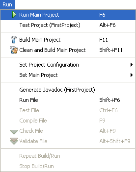
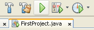
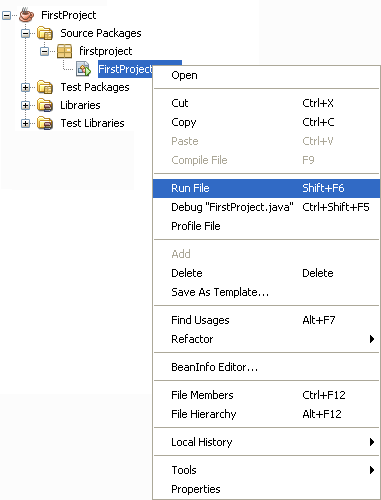
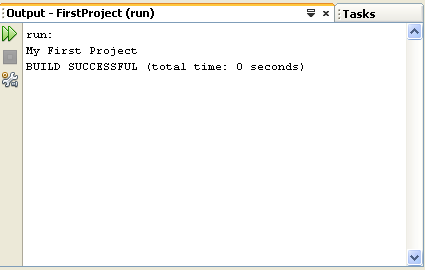

Running your Java Programmes
When you run a programme in NetBeans, it will run in the Output window at the bottom of your screen, just underneath your code. This is so that you don't have to start a terminal or console window - the Output window IS the console.
There are various ways to run your programme in NetBeans. The easiest way is to press F6 on your Keyboard. You can also run programmes using the menus as the top of NetBeans. Locate the Run menu, then select Run Main Programme:

You can also click the green arrow on the NetBeans toolbar:

Another way to run your programmes is from the Projects window. This will ensure that the right source code is being run. Simply right click your java source file in the projects window and you'll see a menu appear. Select Run File.

Using one of the above methods, run your programme. You should see something happening in the Output window:

The second line in the Output window above is our code: My First Project. You can quickly run it again by clicking the two green arrows in the top left of the Output window.